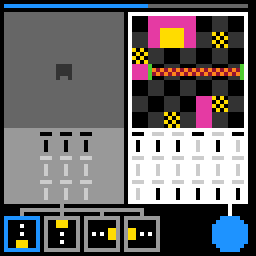

tn36
Write a program on a switch panel and submit it; the level clears when the piece exactly fills the socket.
7 levels · 7 rules · all levels replayed in Lean
Replay
The certified run that cleared every level, one action at a time. Beside each step: the rules of the model that explain it; they are also marked in the rule list below.

Explained by
Press Play or step to load the run. Keys, while the player is on screen: ← → step, Space play / pause. A click is circled; cells that changed are outlined.
How it plays
On the board there is a piece that can be enlarged, with a notch, as well as sockets, flower cells and walls; on the right is a panel made of columns of switches, with a big circle next to it. Which lights are dark in each column makes up a code, and the code is translated by a fixed codebook into one instruction: move one cell up/down/left/right, enlarge, shrink, rotate. Read from left to right, the whole panel is one program. Clicking a switch is writing the program, and the piece does not move; only pressing the big circle hands it in, and then the piece goes through the program instruction by instruction, skipping any instruction that cannot be walked. Only if the end point falls on a flower cell does the piece stay there, otherwise the whole program is voided. If the end point exactly fills the cavity of the socket (position, size and notch orientation all right), the level is cleared. Clicking the box in the bottom bar makes the demo canvas on the left show the effect of some code, for looking up the codebook. The top bar drops cells with clicks, and in some levels two clicks are needed to drop one cell.

Model
The final model: 5 object types and 7 rules. Each rule is a Python check against every recorded step; 4 of them are translated into Lean (the paper's per-game table). Code under a rule is the file of the same name in the agent's Lean project.
Object types
- Top bar
counterThe gauge at the very top of the screen: how many cells remain this level.Lean · World.lean
-- World.counter : Nat structure World where counter : Nat panel : Panel piece : Piece phase : Bool deriving DecidableEq, Repr - Clickable panel
panelWhich switches are dark; read left to right, it is one program.Lean · Panel.lean
-- World.panel : Panel structure Panel where groups : Nat slots : Nat dark : List Bool deriving DecidableEq, Repr - Piece
pieceWhich board cell it is on, how many times enlarged, and where its notch points.Lean · Piece.lean
-- World.piece : Piece abbrev Piece := Form - Flower cells
padsCells on the board where the piece can stop.Lean · Pads.lean
-- Layout.pads : Pads abbrev Pads := List Cell - Layout
layoutThis level's board, walls, socket, bottom-bar box and big circle.Lean · Layout.lean
import Obj.Board.Board import Obj.Board.Pads import Obj.Panel.Toolbox import Obj.Screen.Controls import Obj.Screen.Scenery namespace Game structure Layout where level : Nat board : Board pads : Pads toolbox : Toolbox hits : List Hit scenery : Scenery deriving Repr end Game
Rules
panel_follows_clicksClicking a switch toggles only it; clicking the big circle or nothing changes no switch.Python
from __future__ import annotations from derive.click import target, xy from objects import Panel from .._common import level_changed … … … HISTORY = [ … … … … … … ] def scope_(w, action, nw, ctx): if xy(action) is None: … if level_changed(ctx): … return None def assert_(w, action, nw, ctx): tgt = target(w, action) if tgt is None or tgt == ("disc",): return nw.panel == w.panel want = Panel(w.panel.groups, w.panel.slots, w.panel.dark ^ {tgt}) return nw.panel == wantLean · PanelFollowsClicks.lean
import Obj.Frame.World import Obj.Screen.Controls namespace Game def panelAfter (w : World) : Option Target → Panel | some (.piece kd g k) => w.panel.toggle kd g k | _ => w.panel end Gamepiece_follows_programPressing the big circle makes the piece follow the panel's program, instruction by instruction.Python
from __future__ import annotations from derive.click import target, xy from derive.outcome import outcome from .._common import level_changed … … … HISTORY = [ … … … … … … … … … … … … ] def scope_(w, action, nw, ctx): if xy(action) is None: … if level_changed(ctx): … if target(w, action) == ("disc",) and outcome(w)[0] == "win": … return None def assert_(w, action, nw, ctx): if target(w, action) != ("disc",): return nw.piece == w.piece and nw.pads == w.pads kind, got = outcome(w) if kind == "void": return nw.piece == w.piece and nw.pads == w.pads if nw.piece != got: return False must = w.pads.cells - got.footprint() may = must | w.piece.footprint() return must <= nw.pads.cells <= mayLean · PieceFollowsProgram.lean
import Obj.Compose.Outcome namespace Game def pieceAfter (L : Layout) (w : World) : Option Target → Form | some .disc => match outcome L w with | .move f => f | _ => w.piece | _ => w.piece end Gamecounter_paysEach click drops cells from the top bar at this level's pace.Python
from __future__ import annotations from derive.click import is_reset from .._common import level_changed … … HISTORY = [ … … … … … ] RATE = {5: 2, 6: 2} def pay(level: int, k: int) -> int: return 1 if RATE.get(level, 1) == 1 else k % 2 def scope_(w, action, nw, ctx): if is_reset(action): … if level_changed(ctx): … return None def assert_(w, action, nw, ctx): return nw.counter.left == w.counter.left - pay(ctx["level"], ctx["k"])Lean · CounterPays.lean
import Obj.Frame.Layout import Obj.Frame.World namespace Game def rateOf : Nat → Nat | 5 => 2 | 6 => 2 | _ => 1 def pay (lvl : Nat) (phase : Bool) : Nat := if rateOf lvl = 1 then 1 else if phase then 1 else 0 def upkeep (L : Layout) (w : World) : World := { w with counter := w.counter - pay L.level w.phase, phase := !w.phase } end Gamefit_clears_levelThe level clears when the program's end point exactly fills the socket's cavity.Python
from __future__ import annotations from derive.click import is_reset, target from derive.outcome import outcome from .._common import level_changed … … … HISTORY = [ … … … … … … ] NEEDS = ("w",) def scope_(w, action, nw, ctx): if is_reset(action): … if level_changed(ctx) and (ctx.get("level_next", 0) > ctx.get("level", 0) or ctx.get("state_next") == "WIN"): return None if target(w, action) == ("disc",) and outcome(w)[0] == "win": return None … def assert_(w, action, nw, ctx): fit = target(w, action) == ("disc",) and outcome(w)[0] == "win" advanced = (ctx.get("level_next", 0) > ctx.get("level", 0)) or ctx.get("state_next") == "WIN" return fit == advancedLean · FitClearsLevel.lean
import Obj.Compose.Outcome namespace Game def isGoal (L : Layout) (w : World) : Bool := match outcome L w with | .win => true | _ => false end Gamelayout_staysWithin a level, the layout does not change.Python onlyPython
from __future__ import annotations from derive.click import is_reset from .._common import level_changed … … HISTORY = [ … … … ] def scope_(w, action, nw, ctx): if is_reset(action): … if level_changed(ctx): … return None def assert_(w, action, nw, ctx): return nw.layout == w.layoutclear_starts_freshOn entering a new level, the top bar is full and all switches are lit.Python onlyPython
from __future__ import annotations from objects.gauge.counter import WIDTH … … … … … HISTORY = [ … … … ] NEEDS = ("nw",) def scope_(w, action, nw, ctx): if not (ctx.get("level_next", 0) > ctx.get("level", 0)): … if ctx.get("state_next") != "NOT_FINISHED": … return None def assert_(w, action, nw, ctx): return nw.counter.left == WIDTH and not nw.panel.darkreset_restartsAfter a restart, the game returns to the first level with a full top bar.Python onlyPython
from __future__ import annotations from derive.click import is_reset from objects.gauge.counter import WIDTH … … … … HISTORY = [ … … … ] NEEDS = ("nw",) def scope_(w, action, nw, ctx): … def assert_(w, action, nw, ctx): return ctx.get("level_next") == 0 and nw.counter.left == WIDTH
Code is shown with comments and the agent's notes removed; the files as written are in the archive under Check it yourself.
Proof
For every level, Lean starts from the level's first screen, applies the model's rules to the certified actions, and checks that every computed state agrees with the recorded frame on the components the model represents, and that the last one wins. Each theorem is closed by the Lean kernel and is a statement about the learned model.
Every level can be won
theorem Game.Levels.L0_winnable :
∃ as : List Act, everWon (step (Replay.levelLayout 0)) L0_start as = true := …theorem Game.Levels.L1_winnable :
∃ as : List Act, everWon (step (Replay.levelLayout 1)) L1_start as = true := …theorem Game.Levels.L2_winnable :
∃ as : List Act, everWon (step (Replay.levelLayout 2)) L2_start as = true := …theorem Game.Levels.L3_winnable :
∃ as : List Act, everWon (step (Replay.levelLayout 3)) L3_start as = true := …theorem Game.Levels.L4_winnable :
∃ as : List Act, everWon (step (Replay.levelLayout 4)) L4_start as = true := …theorem Game.Levels.L5_winnable :
∃ as : List Act, everWon (step (Replay.levelLayout 5)) L5_start as = true := …theorem Game.Levels.L6_winnable :
∃ as : List Act, everWon (step (Replay.levelLayout 6)) L6_start as = true := …What cannot be won under the model
theorem Game.unsolvable_of_invariant (L : Layout) (P : World → Prop)
(hkeep : ∀ w w' a, P w → step L w a = Res.ok w' → P w')
(hwin : ∀ w a, P w → step L w a ≠ Res.won) :
∀ w, P w → ∀ as : List Act, everWon (step L) w as = false := …Statements only; the proofs and the full Lean project are in the archive, with the steps to re-run them, under Check it yourself.
Check it yourself
Everything on this page comes from files you can download and check. The archive holds the agent's files: the recorded run, the concept book, the concept sources, the Lean project and the sealed model file, plus the record of our kernel check.
Download tn36.zip 0.3 MB · 67 files
Re-run the proof
Before you start: our run of this check took 18 s and 1.1 GB of memory at its peak (2026-10-24).
- Download tn36.zip and unpack it. The model and its theorems are in
archive/tn36-20260911-2/formal/Game.lean. Before changing it, check that its SHA-256 isd829e8a253abae6feed971dbdf8a080637f8a33853181c069a5c67033e83e1ee - Install Lean with elan, then the version named in the archive's
lean-toolchain:elan toolchain install leanprover/lean4:v4.34.0 - Copy the model file to
Check.leanand append these two lines to the copy:#print axioms consistent #print axioms faithful - In the folder that holds
Check.lean, run:lean +leanprover/lean4:v4.34.0 -M60000 Check.lean - Lean should finish without errors and print:
The first line is printed by the file itself: for each rule, how many recorded transitions meet its condition.GUARD_HITS stem_click_toggles=3,top_click_toggles=3,level0_win=1,panel_click_toggles=215,counter_spends=221,counter_pays_every_other=248,clear_refills_counter=27,disc_fit_clears_level=14,disc_runs_program=6,offpad_end_voids=3,four_in_a_row_voids=2,few_ops_and_dwell_voids=2,allblank_voids_program=2,piece_footprint_blocks=2,blank_slot_is_nop=2,even_slots_keep_parity=174,board_frozen=6,reset_refills=1 'consistent' depends on axioms: [propext] 'faithful' depends on axioms: [propext]
What a pass establishes
consistent: for every recorded transition, as read by the agent's parser and with duplicates removed, every rule whose condition holds also has its effect hold. faithful: the certified run, recomputed step by step from the first screen of each level, matches the record and ends in a win. Axioms used: propext, all among Lean's standard ones.
What it does not establish: that the parser reads the screens correctly (that step runs in Python, outside Lean), or that a rule whose condition never occurs in the record is right. The Python file that produced the readings inside the model file is in the archive at meta/repair-20260928/lib/tn36-20260911-2/_lib.py.